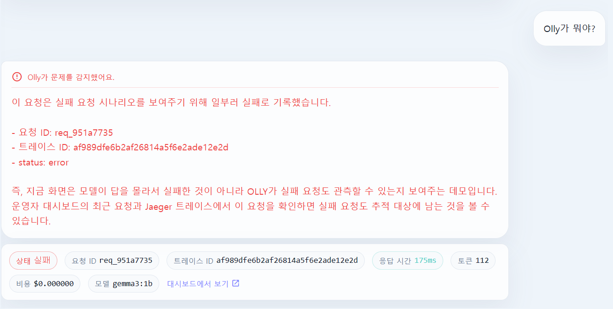

← 전체 프로젝트01 02 03 실패 요청의 ID와 오류 상태를 유지하는 데모 화면 · 팀 공동 산출물
PROJECT 03 / 시스템 연구
OLLY
느린 LLM 요청의 원인을 단계별로 확인하는 관측성 MVP
LLM/RAG 서비스에서 검색·모델 호출·오류를 요청 단위로 연결해 지연 원인을 추적하는 관측성 MVP입니다.
CONTRIBUTION / CONTEXT
문제 정의, 로컬 SLM 선택과 개발 범위 판단, 반복 검증 시나리오 설계 담당
RESULT
정상·검색 지연·모델 지연·토큰 증가·오류의 5개 시나리오를 각 10회 실행해 span·지표·오류 알림 연결을 확인했습니다.
TECHNOLOGY
요청 안의 실행 단위를 추적
전체 응답 시간만으로는 검색·모델 호출·후처리 중 어디에서 지연되는지 구분하기 어렵습니다.
Chat UI의 request_id와 trace_id를 대시보드·Jaeger·오류 알림에 연결해 한 요청의 실행 단위를 확인하도록 설계했습니다.
- 검색과 모델 호출의 span 및 소요 시간 비교
- 요청별 토큰·비용 지표 확인
- 오류 상태를 유지한 추적과 Discord 알림 연결
반복 가능한 로컬 검증 범위 설정
외부 API 비용과 호출 제한 영향을 줄이기 위해 로컬 SLM을 선택했습니다.
정상 흐름과 단계별 지연·토큰 증가·오류를 구분해 반복 실행하도록 검증 범위를 설계했습니다.
- 지연을 주입한 단계의 span 증가 확인
- 시나리오별 지표 차이와 오류 요청 추적 확인
- 로컬 MVP 관측 흐름 검증이며 운영 환경 성능 개선율은 측정하지 않음
관측 데이터의 활용 경로
FastAPI API 계측에서 수집한 요청 정보가 Prometheus 지표와 Jaeger 추적으로 이어지고, 실패 요청은 알림으로 연결됩니다.
단일 요청을 기준으로 지연·토큰·오류를 함께 확인하도록 해 장애 원인을 단계별로 좁힐 수 있는 MVP를 구성했습니다.
- OpenTelemetry 기반 요청 흐름 계측
- Prometheus·Grafana 지표와 Jaeger trace 결합
- SLM·Discord 기반 알림 흐름 구성
DEMO / LOCAL MVP
오류 요청도 추적할 수 있도록

EVIDENCE & LINKS